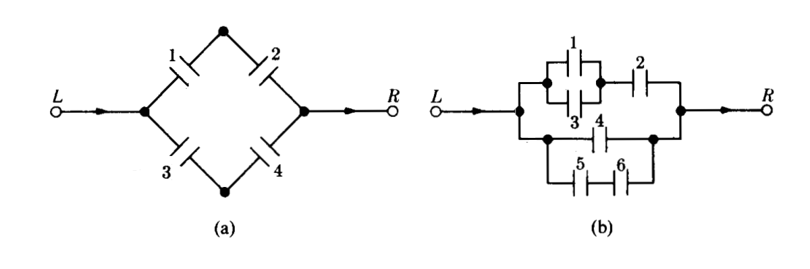

Monitoría 2
dgonzalez

Problema 1
Suponga que el conjunto universal consta de los números enteros del 1 al 10.
Sea
\(A=\{2,3,4\}\), \(B=\{3,4,5\}\), \(C=\{5,6,7\}\)
Determine los elementos de los siguientes conjuntos:
- \(A \cap B\)
- \(A' \cap B\)
- \((A \cap B)'\)
- \((A' \cap B')'\)
- \(A \cap (B \cup C)'\)
- Represente los conjuntos \(A\), \(B\) y \(C\) en un diagrama de Venn (John Venn-1880)
Problema 2
Suponga que el conjunto \(U\) está
dado por \(U = \{ x | 0 \leq x \leq 2
\}\) . Sean los conjuntos A y B
definidos como:
\[A=\{ x | 1/2 \leq x \leq
1\}\]
\[B = \{x|1/4 \leq x \leq 3/4 \}\]
Describa los siguientes conjuntos:
- \(A \cup B\)
- \(A \cup B'\)
- \(A \cap B'\)
- \((A \cap B)'\)
- Represente gráficamente los conjuntos solicitados
Problema 3
Un cargamento de 1500 lavadoras contiene 400 defectuosas y 1100 no defectuosas. Se eligen al azar doscientas lavadoras (sin sustitución) y se clasifican. a. ¿Cual es la probabilidad de que se encuentren exactamente 50 artículos defectuosos?, b. ¿?Cual es la probabilidad de que se encuentren al menos 50 artículos defectuosos? c. ¿ entre 50 y 60 artículos defectuosos?
Problema 4
Diez fichas numeradas del 1 al 10 se mezclan en una urna. Se sacan de
la urna dos fichas numeradas (X,Y) una y otra a la vez sin
sustitución. ¿Cuál es la probabilidad de que X+Y=10 ?
Problema 5
Un lote consta de 10 artículos buenos, 4 con pequeños defectos y 2 con defectos graves. Se elige un artículo al azar. Encontrar la probabilidad de que :
- No tenga defectos,
- Tenga defecto grave,
- Que sea bueno o tenga un defecto grave
Problema 6
Un mecanismo puede ponerse en cuatro posiciones digamos
a, b, c y d . Hay 8
de tales mecanismos en un sistema.
- ¿De cuántas maneras diferentes se puede instalar el sistema ?,
- ¿Cuantas maneras son posibles si sólo se usan las posiciones
aybcon la misma frecuencia?
Problema 7
Entre los números \(1,2,3 .... 50\)
se escoge un número al azar. ¿Cuál es la probabilidad de que el número
escogido sea divisible por 6 o por 8?
Problema 8
La urna 1 contiene x bolas blancas e y
bolas rojas. La urna 2 contiene z bolas blancas y
v bolas rojas. Se escoge una bola al azar de la urna 1 y se
pone en la urna 2. Entonces se escoge una bola al azar de la urna 2.
¿Cuál es la probabilidad de que esta bola sea blanca?
Problema 9
En las siguientes figuras (a) y (b) se supone que la probabilidad de
que cada interruptor este cerrado es p y que cada
interruptor se abre o se cierra independientemente de cualquier otro.
Encontrar en cada caso la probabilidad de la corriente pase de
Izquierda a Derecha

Ejercicios tomados de Meyer( 1986)
Problema 10
Los contaminantes más comunes de las aguas son de origen orgánico. Puesto que la mayor parte de los materiales orgánicos se descompone por acción de bacterias que requieren oxígeno, un exceso de materia orgánica puede significar una disminución en la cantidad de oxígeno disponible. Ello afecta eventualmente a otros organismos presentes en el agua. La demanda de oxígeno por parte de una bacteria se llama demanda biológica de oxígeno (DBO). Un estudio de las corrientes acuáticas que circulan en las proximidades de un complejo industrial revela que el 35% tiene una alta DBO, el 10% muestra una acidez elevada y un 4% presenta ambas características. ¿Son independientes los sucesos «la corriente tiene una alta DBO» y «la corriente posee una acidez elevada»? Calcular la probabilidad de que la corriente tenga una acidez elevada, dado que presenta una alta DBO.
Problema 11
Suponga que una familia tiene cuatro hijos.
- Represente los eventos en un diagrama de árbol
- Hallar la probabilidad de que exactamente dos sean varones.
- Cuál es la probabilidad de que dos sean varones si el nacido en primer lugar es un varón?.
- ¿Cuál es la probabilidad de que el último hijo nazca varón si los tres primeros son mujeres?
Problema 12
Unos estudios muestran que los ejemplares de una cierta raza de liebres de alta montaña (liebre esquiadora) mueren antes de lo normal, aun en ausencia de depredadores o de enfermedad conocida alguna. Dos de las causas de muerte identificadas son: baja cantidad de azúcar en sangre y convulsiones. Se estima que el 7% de los animales presenta ambos síntomas, el 40% tiene bajo nivel de azúcar en sangre, y el 25% sufre convulsiones.
- ¿Cuál es el porcentaje de muertes producidas por causas que no sean las que hemos mencionado?
- ¿Cuál es la probabilidad de que un animal elegido aleatoriamente que tiene bajo nivel de azúcar en sangre sufra también convulsiones?
Problema 13
Se cree que la distribución de los grupos sanguíneos en Estados
Unidos en la Segunda Guerra Mundial era: tipo A, 41%;
tipo B, 9%; tipo AB, 4%; y
tipo O, 46%. Se estima que en esa época, el 4% de las
personas pertenecientes al tipo O fue clasificado como del
tipo A; el 88% de los del tipo A fue
correctamente clasificado; el 4% de los del tipo B se
clasificó como del tipo A, y el 10% de los del
tipo AB fue, igualmente, clasificado como del
tipo A. Un soldado fue herido y conducido a la enfermería.
Se le clasificó como del tipo A. ¿Cuál es la probabilidad
de que tal grupo sea ciertamente el suyo?
Tomados de J. Susan Milto (2001)
Problema 14
En el colegio Anglo-Frances se imparten sólo los idiomas inglés y francés. El 80% de los alumnos estudian inglés y el resto francés. El 30% de los alumnos que cursan de inglés son socio del club musical del colegio, mientras de los que estudian francés son socio de dicho club el 40%. Si el director del colegio elige un alumno de manera aleatoria, ¿qué tan probable es que dicho alumno pertenezca al club de musical? . Por otra parte el psicólogo del colegio afirma que estudiar inglés es un evento independiente de estudiar francés. ¿usted que opina respecto a esta afirmación? (justifique su respuesta)
Problema 15
En una universidad de la región hay 4000 estudiantes distribuidos en tres grupos. Primeros semestre (1 a 3), mitad de carrera (4 a 7) y final de carrera (8 a 10). Esta población esta conformada por estudiantes que realizan actividades extracuricolares y aquellos que no participan en ninguna actividad, distribuidos como se muestra en la siguiente tabla:
| Participa en actividades del MU | No participa en actividades del MU | |
|---|---|---|
| Primeros semestres | 1250 | 1530 |
| Mitad de carrera | 465 | 350 |
| Final de carrera | 270 | 270 |
Se ha encomendado a un grupo de profesores consejeros, seleccionar un estudiante de este grupo para guiarlos académicamente en su proceso de formación. El grupo de profesores está conformado por Sandra, Isabel, David, Daniel y Gerardo
Sandra prefiere que el grupo de estudiantes a su cargo sean estudiantes de primeros semestre y que participan en actividades del Medio Universitario (MU) . Isabel en cambio los eligirá dentro del grupo de estudiantes que está finalizando carrera, dentro de los que prefieren no participar en actividades del MU. Por su parte David desea estudiantes sean del rango intermedio o mitad de carrera, pues ellos no han realizado la escogencia del énfasis. Daniel solicita un listado de los estudiantes que participan e actividades del MU y de ellos desea que el estudiante a su cargo esté cursando últimos semestre. Finalmente Gerardo solo quiere que el estudiante seleccionado para su acompañamiento sea de primeros semestre. Si en cada caso los estudiantes son selecionados de maneta aletatoria de toda la población tiene la mayor probabilidad de ver cumplido sus deseos?
Problema 16
Un miembro de la comunidad universitaria se somete a una prueba para detectar el Covid19. Si la persona está enferma, el test dá positivo con un 96% de certeza. Si la persona está sana, el test será negativo con un 94% de certeza. Se sabe que 1 de cada 100 personas de esta comunidad está enferma
- Sabemos que el test resultó positivo. Que tan probable es que la persona a la que le realizaron la prueba esté enferna?
- El test resultó negativo. ¿Cual será la probabilidad de que la persona examinada este sana?
Problema 17
Se escogen al azar 5 lámparas de 25 de las cuales 8 son defectuosas.
Hallar la probabilidad de que:
a. Ninguna de las lámparas
seleccionadas sea defectuosa. b. Exactamente una de las lámparas
seleccionadas sea defectuosa. c. Por lo menos una de las lámparas
seleccionadas no sea defectuosa
Problema 18
Un estudiante realiza dos exámenes en un mismo día. La probabilidad de que apruebe el primer examen es de 0.6 . La probabilidad de que apruebe el segundo examen es de 0.8; y la de que apruebe los dos exámenes es 0.5 :
- Represente la información suministrada mediante:
- Una tabla cruzada, con las probabilidades marginales, conjuntas y condicionales
- Diagrama de árbol,
- Un diagrama de Venn
- Que es más probable que ocurra :
- Que sabiendo que gane el primer examen, también gane el segundo examen
- Que sabiendo que perdió el primer examen, también pierda el segundo examen
Problema 19
El Departamento de crédito de una cadena de supermercados, informó que el 30% de sus ventas se pagan con efectivo o con cheque; 30% se paga con tarjeta de crédito y el resto con tarjeta débito. Veinte por ciento de las ventas realizadas con efectivo o cheque, noventa por ciento de las compras realizadas con tarjeta de crédito y el sesenta por ciento de las compras realizadas con tarjeta débito, son realizadas por más de 50.000. La señora Fatima acaba de comprar un vestido nuevo que le costó 120.000. ¿Que es más probable que halla pagado su vestido con tarjeta de crédito o que lo halla hecho con tarjeta débito?